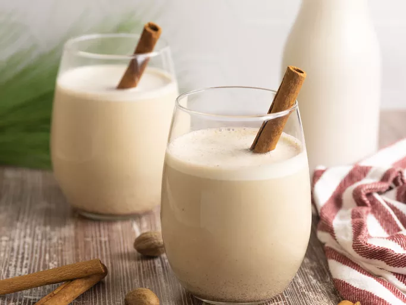

Coquito

Steps
- Gather all ingredients.
- Combine evaporated milk and egg yolks in the top of a double boiler over simmering water. Cook over the simmering water, stirring constantly, until mixture is thick enough to coat the back of a spoon, and reaches a temperature of 160 degrees F (71 degrees C).
- Transfer mixture to a blender. Add cream of coconut, sweetened condensed milk, rum, water, vanilla, cinnamon, and cloves; blend until combined, about 30 seconds.
- Pour into sterilized glass bottles and store in the refrigerator; serve cold or over ice, if desired.
Ingredients
- 1 (12 fluid ounce) can evaporated milk
- 2 large egg yolks, beaten
- ...